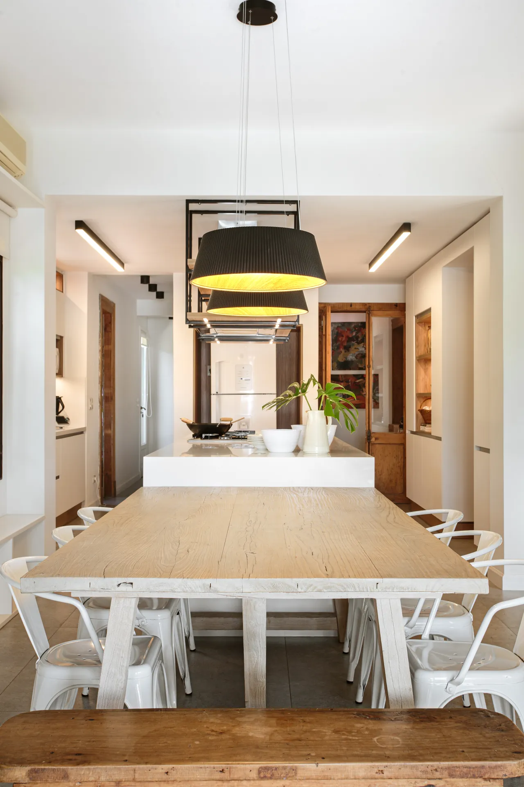
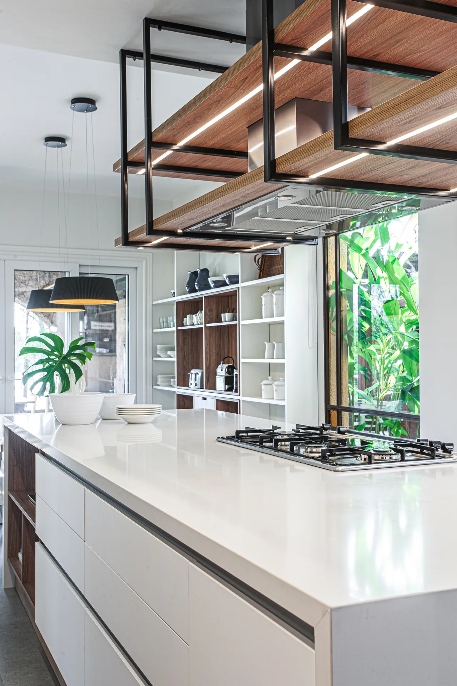
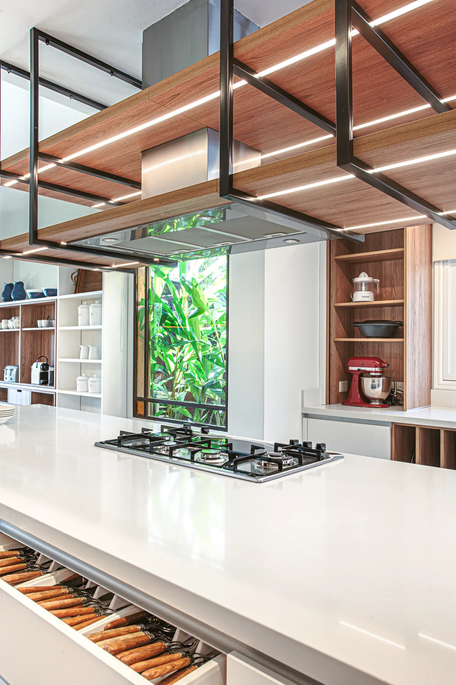
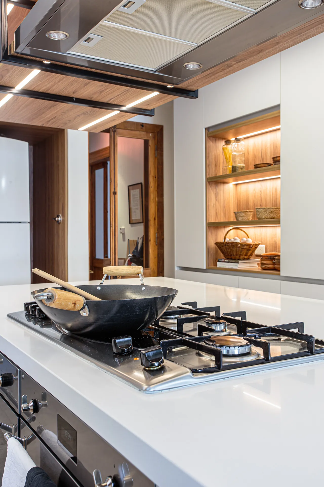
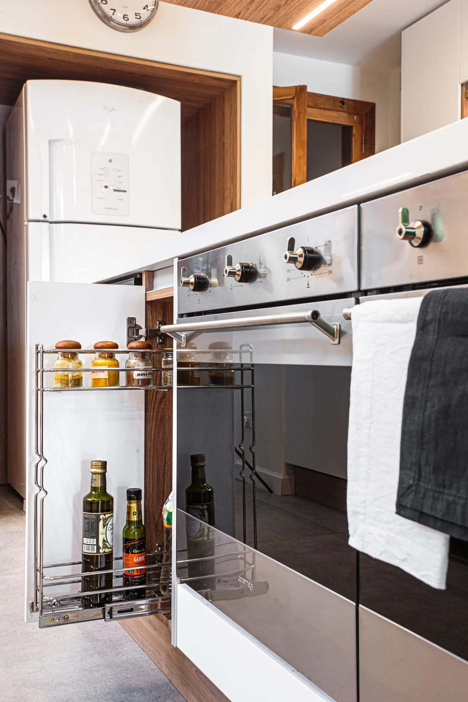
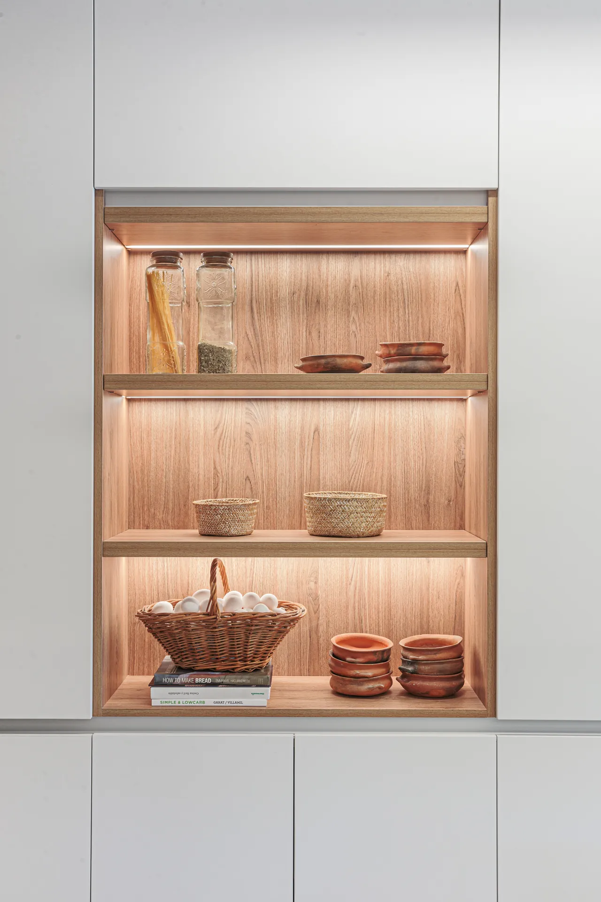
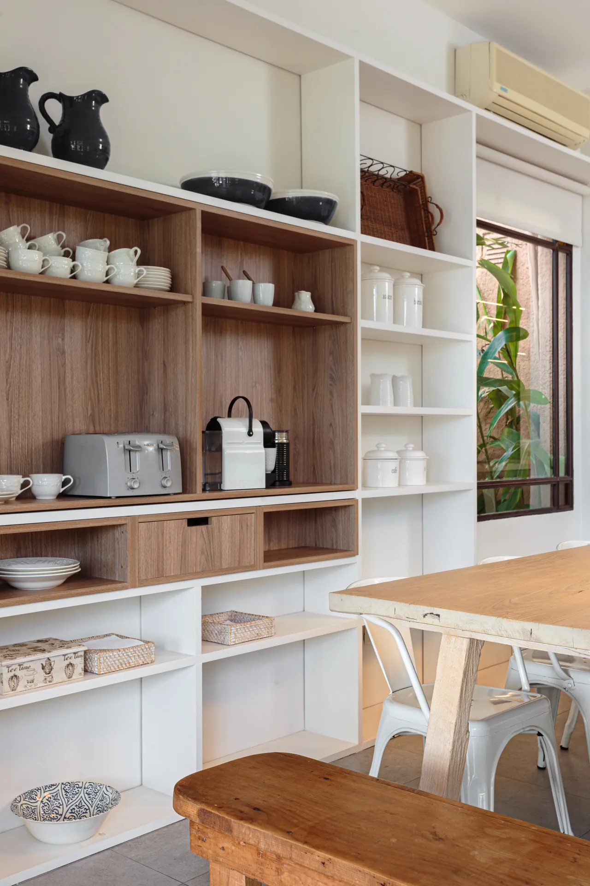
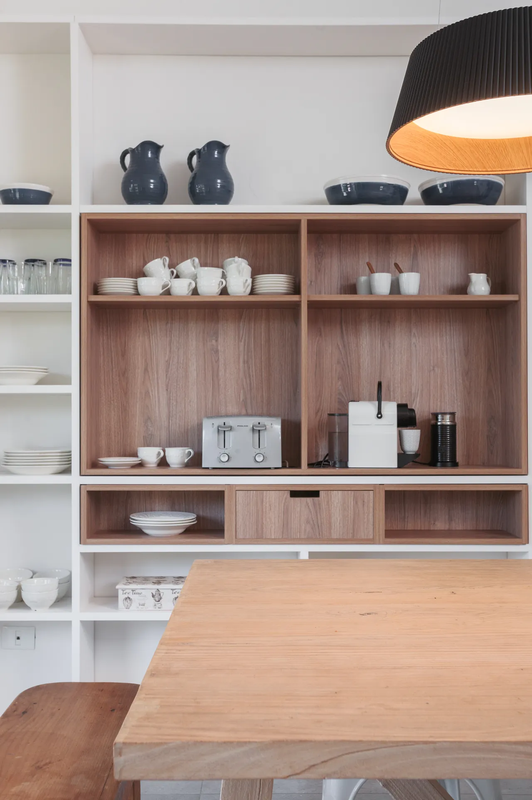

Una cocina ultrafuncional y moderna para una familia numerosa
En esta casa de un barrio cerrado con vista a la laguna, el estudio refuncionalizó el sector de cocina y comedor diario para servir con más comodidad a una familia con cuatro hijos adolescentes y diversas necesidades alimentarias.


Sin muro, con luz
La cocina era oscura y pequeña. Se demolió el muro que la separaba del comedor diario y ambos se integraron en un solo espacio amplio, continuo y luminoso. La mesa de madera arenada funciona como extensión de la larguísima isla, donde se cocina y se asa.

Todo al alcance
Sobre la isla cuelga una estantería de hierro y madera que también aloja la campana extractora. Ahí se guardan, al alcance de la mano, las cacerolas, los woks y los demás elementos de uso continuo.
Mate y brillo
Muebles de madera con puertas de Rauvisio blanco mate, en contraste con las mesadas de Silestone Miami White brillante. Zócalos altos de madera maciza despegan los módulos del piso.

Un solo espacio amplio, continuo y luminoso para una familia de seis y una cocina de uso intenso


Una cocina de uso intenso
Detrás de una puerta tipo persiana de aluminio se ocultan los pequeños electrodomésticos de uso eventual, para una sensación de orden y pulcritud. Canastos verduleros, estantes para condimentos, cestos de reciclaje y un barral con utensilios suman practicidad. Del otro lado de la isla, un mueble de puertas altas resuelve con creces el guardado.

Más despojado
En el comedor diario, una biblioteca de todo el largo acompaña la mesa y aloja la vajilla de uso diario y pequeños electrodomésticos, como la cafetera y la tostadora.
Líneas y colgantes
Dos artefactos lineales en aluminio negro, líneas de leds embutidas en los muebles y en la estantería sobre la isla, y dos colgantes negros con interior de madera sobre la mesa. Un porcellanato gris de gran formato unifica todo el sector.

Luz y materia
Esta obra es una remodelación integral de cocina: el estudio redistribuye el espacio, diseña cada mueble a medida y resuelve materiales e iluminación para el uso diario de la familia.
Conocer los servicios
Otros proyectos
Ver todos los proyectos


Todo empieza con una conversación
El estudio diseña viviendas completas en Argentina, España y Estados Unidos.